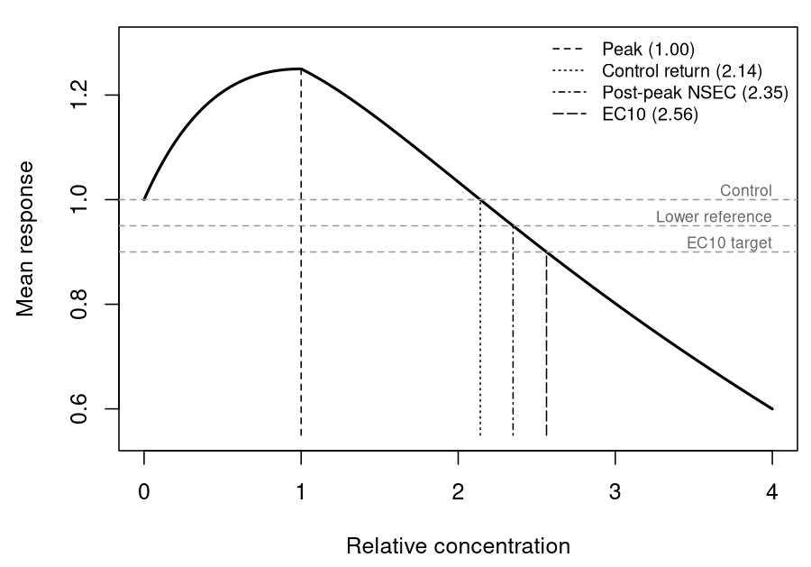

Hormesis in concentration–response analysis: estimands for guideline values
Source:vignettes/example10.Rmd
example10.RmdAbstract
Low concentrations of a toxicant can increase a measured biological
response before higher concentrations reduce it, a pattern termed
hormesis. A threshold equation that allows this pattern can place its
breakpoint at the response maximum, although the response at that
concentration already differs from its unexposed value. Where that
breakpoint is used as a no-effect concentration in deriving water
quality guideline values, it marks a stimulated response and not an
absence of effect. We distinguish four locations on a hormetic curve:
the peak, the descending return to the control (the limiting dose for
stimulation), a control-based effect concentration (ECx) and a post-peak
no-significant-effect concentration (NSEC). The first three have been
defined and estimated in the hormesis literature, and we propose the
fourth as an extension of the NSEC. We review how international and
jurisdictional methods treat stimulation, conduct an exploratory design
simulation, and fit monotone and hormetic equations to individual growth
rates of the tropical marine symbiont Cladocopium goreaui and a
threshold hormesis equation to lettuce shoot biomass. Most of the
methods reviewed retain stimulated observations and measure inhibition
against the true control, although none defines a regression-based
no-effect estimate for a hormetic curve. For C. goreaui, the
threshold hormesis equation neclinhorme placed its peak at
0.91 mg/L total aromatic hydrocarbons and its post-peak NSEC at 2.01
mg/L. However, its linear declining limb overpredicted growth at 1.75
mg/L, where the observed mean was 15% below the control, and the EC10
previously published for these data is higher than a concentration at
which the observed mean was 16% below the control. A control-based NSEC
is a more coherent default no-effect estimand for a hormetic curve than
its peak parameter. However, the Australian and New Zealand definition
of the NSEC applies to monotone curves, and evidence from these case
studies cannot establish that the proposed extension is safe for
guideline derivation.
Introduction
Water quality guideline values for toxicants are commonly derived by fitting a species sensitivity distribution to a chronic toxicity estimate for each tested species. The Australian and New Zealand method prefers no-effect concentrations (NECs) and no-significant-effect concentrations (NSECs) as those estimates, where the estimate is defensible (Warne et al. 2025). An NEC is the breakpoint of a threshold model, below which the expected response does not differ from the control response (Fox 2010). An NSEC is the concentration at which a smooth curve falls below a lower quantile of the posterior distribution of the control response (i.e. the highest concentration at which the fitted response is statistically indistinguishable from the control) (Fisher and Fox 2023). Both quantities were developed for a response that declines monotonically with concentration, and the glossary of the Australian and New Zealand method defines the NSEC using a monotonically decreasing model (Warne et al. 2025).
Not all concentration–response data decline monotonically. At low concentrations a measured response can rise above the control before falling at higher concentrations, a biphasic pattern termed hormesis (Calabrese 2008; Environment Canada 2007; US Environmental Protection Agency 2012). Environment Canada’s algal test method uses the term only for a rise that is followed by inhibition, and calls an isolated rise stimulation (Environment Canada 2007), while its statistical guidance prefers the more general term low-dose stimulation, which also includes solvent effects and experimental error (Environment Canada 2005). Such responses are common in the algal and aquatic plant tests that supply many chronic guideline inputs. For example, Cedergreen et al. (2007) found at least one treatment above 105% of the control in 25–76% of the growth-rate curves for each of Lemna minor, Pseudokirchneriella subcapitata and two terrestrial plants, and Environment Canada describes low-dose stimulation as perhaps the most common hindrance to the analysis of well-designed sublethal toxicity tests (Environment Canada 2005). Literature surveys put the maximum stimulation at about 30–60% above the control (Calabrese 2008), and Canadian laboratories regard about 30% as a more likely maximum (Environment Canada 2005). However, prevalence estimates drawn from such surveys have been criticised for inadequate control of false positives (Crump 2001).
The pattern is descriptive, and it does not by itself establish a beneficial effect or identify a mechanism. A growth factor introduced with the exposure can increase growth; for example, Negri et al. (2021) suggested that microalgae may use compounds from oil as a source of organic carbon. An organism may also allocate resources to the measured trait at the expense of reproduction or another trait (Forbes 2000; Jager et al. 2013), and a stimulation of growth can be transient (Cedergreen 2008). The measured endpoint, the true control and any other available endpoints should therefore be examined before the rising limb is interpreted as ecologically harmless. That biological judgement can, however, be made separately from the statistical treatment of the curve.
Test guidelines and statistical guidance from several jurisdictions address stimulation, and most agree on two points. First, stimulated observations are retained and modelled. The revised OECD growth-inhibition test guideline (TG 201), which applies to freshwater algae and cyanobacteria, calls for fitting a standard monotone model and a suitable hormesis model, selecting between them using fit diagnostics and reporting the choice (paragraph 62); it also favours regression on individual replicate responses, uncertainty intervals for effect concentrations and reporting the observed stimulation (OECD 2026). Environment Canada’s statistical guidance recommends fitting a hormesis model to all observations (Option 1 in section 10.3.3) and finds no statistical basis for omitting stimulated concentrations (Option 3) (Environment Canada 2005). Similarly, Commission Regulation (EU) 2016/266 advises against deleting stimulated responses where possible (European Commission 2016), and US EPA plant-test guidance favours retaining individual replicates and analysing the influence of stimulation instead of discarding stimulated data (US Environmental Protection Agency 2012). Second, inhibition is measured against the control. Environment Canada estimates the ICp of a hormesis model in relation to the true control and rejects smoothing the control upwards (Option 2), because that creates a reference response not observed in the test (Environment Canada 2005). In its metals appendix, the European Chemicals Agency similarly advises that positive effects should not be considered in the derivation of an ECx (European Chemicals Agency 2008).
These documents differ on when stimulation may be set aside. OECD TG 201 allows stimulation to be ignored only when it is less than 10% above the control and is not statistically significant in an appropriate post hoc test, and recommends a nonparametric method (e.g. linear interpolation with bootstrapping) where neither the monotone nor the hormesis model fits adequately (OECD 2026). The EU regulation allows small stimulation to be ignored when estimating an EC50, but calls for a special procedure for low ECx values or extreme stimulation, for which it identifies interpolation with bootstrapping and, for extreme stimulation, a hormesis model (European Commission 2016). Environment Canada’s algal method substitutes control responses for stimulated concentrations (Option 4) only where regression is unsuitable and the ICPIN interpolation method is used, so this is a method-specific fallback and not a recommendation to alter the primary observations (Environment Canada 2007). US EPA plant-test guidance defines an ICx as a reduction from the smoothed mean control response (US Environmental Protection Agency 2012). In the ICp procedure that smoothing averages the control with adjacent treatment means until the means no longer increase, and US EPA’s whole-effluent guidance notes that it may result in a large upward adjustment in the control mean where low concentrations are stimulated (US Environmental Protection Agency 2000), which is the procedure Environment Canada rejects. The European Chemicals Agency’s advice is narrower in scope: it concerns hormesis observed with essential nutrients where an EC10 is extrapolated below the lowest tested concentration, for which it recommends a model other than the log-logistic (European Chemicals Agency 2008).
For no-effect estimates, the guidance addresses hypothesis tests and not regression. Environment Canada treats low-dose stimulation as non-harmful in hypothesis testing (Option 5), so that only effects significantly worse than the true control are considered in designating the NOEC and LOEC (Environment Canada 2005). OECD guidance on the statistical analysis of ecotoxicity data recommends pairwise comparison procedures for nonmonotone concentration–response data (OECD 2006). US EPA whole-effluent guidance regards stimulation at low concentrations followed by a decline as a valid concentration–response relationship, for which hypothesis testing and point estimation provide reliable results, whereas an interrupted pattern can severely compromise the identification of a NOEC and LOEC and calls for checks of test conditions, randomisation, within-treatment variability and test sensitivity (US Environmental Protection Agency 2000). Environment Canada also acknowledges that the calculation cannot decide whether stimulation is biologically adverse (Environment Canada 2005). None of these documents defines a regression-based no-effect estimate for a hormetic curve. Across these jurisdictions, the control reference and the retention of observations therefore have stronger support than any particular no-effect definition for a hormetic curve.
Several equations have been proposed to describe a hormetic curve.
Brain and Cousens modified the log-logistic model to allow a rising limb
(Brain and Cousens 1989), and later
reparameterisations estimate effect concentrations, the concentration of
maximum stimulation and the concentration at which the response returns
to the control directly, with their standard errors (Ewijk and Hoekstra 1993; Schabenberger et al. 1999;
Belz and Piepho 2012). Cedergreen and colleagues proposed a more
flexible empirical form, which detected significant hormesis in 18 of 51
macrophyte curves for which the Brain–Cousens model detected none (Cedergreen et al. 2005). The choice of equation
also changes these estimates: across 23 datasets, Belz and Piepho (2012) found differences of up
to 1768% between the estimates from two equations where one was
misspecified, compared with up to 26% where both fitted the data. In a
Bayesian setting, Kim et al. (2015)
averaged over monotone and hormetic models to estimate a benchmark dose,
whereas the EFSA benchmark-dose guidance recommends Bayesian model
averaging over monotone models only, and was not developed for
ecotoxicological data (EFSA Scientific Committee
2022). bayesnec includes two smooth equations based
on the Brain–Cousens form (ecxhormebc4 and
ecxhormebc5) and six threshold equations with a rising limb
(nechorme, nechorme4,
neclinhorme, nechormepwr,
nechorme4pwr and nechormepwr01) (Fisher, Barneche, et al. 2024). In a monotone
threshold equation such as nec3param, the nec
parameter locates the concentration at which a declining response
starts. In a threshold hormesis equation, this parameter locates the
maximum of the initial rise, where the fitted response already differs
from the control. If that value is passed to guideline derivation as a
no-effect concentration, its name and its biological interpretation
disagree. We encountered this in a mercury growth-rate series for a
freshwater alga, in which several low concentrations exceeded the
control before a decline. That series is privately shared and is
excluded here while permission for its redistribution is sought.
A hormetic curve has at least four locations that could be reported
as a no-effect or low-effect concentration (Figure 1). The peak is the
concentration of the maximum fitted response, termed M in the
reparameterised Brain–Cousens and Cedergreen equations (Schabenberger et al. 1999; Belz and Piepho
2012). The control return is the first concentration beyond the
peak at which the fitted response falls back to the fitted control;
Brain and Cousens called it the limiting dose for stimulation (LDS)
(Brain and Cousens 1989), and Calabrese
the zero equivalent point (Calabrese 2008;
Calabrese et al. 2019). A control-based ECx is the concentration
at which the response has fallen x% below the fitted control, measured
from the control and not from the stimulated peak, as in the
reparameterised hormesis equations (Ewijk and
Hoekstra 1993; Belz and Piepho 2012). The post-peak NSEC, which
we propose here, is the concentration on the declining limb at which the
fitted response falls below a lower quantile of the posterior
distribution of the control, and so extends the definition of Fisher and Fox (2023) to a nonmonotone curve.
Only the last two of these locate a decline below the control, and only
the NSEC is defined by a statistical comparison with it, which makes it
the regression counterpart of Environment Canada’s rule for hypothesis
tests. A threshold hormesis equation makes the peak an explicit
parameter, whereas a smooth Brain–Cousens curve generally has no
parameter named nec, so a comparison across equations
requires a common control-based estimand.
m <- function(z) 1 + 0.25 * z * exp(1 - z) - 0.15 * pmax(z - 1, 0)
x <- seq(0, 4, length.out = 400)
crossing <- function(target) uniroot(function(z) m(z) - target, c(1.01, 4))$root
locations <- c(Peak = 1, `Control return` = crossing(1),
`Post-peak NSEC` = crossing(0.95), EC10 = crossing(0.9))
op <- par(mar = c(4.3, 4.4, 1, 0.5))
plot(x, m(x), type = "l", lwd = 2, xlab = "Relative concentration",
ylab = "Mean response", ylim = c(0.55, 1.3))
abline(h = c(1, 0.95, 0.9), lty = 2, col = "grey60")
text(4, c(1, 0.95, 0.9), c("Control", "Lower reference", "EC10 target"),
adj = c(1, -0.3), cex = 0.7, col = "grey40")
segments(locations, 0.55, locations, m(locations), lty = 1:4 + 1)
legend("topright", legend = sprintf("%s (%.2f)", names(locations), locations),
lty = 1:4 + 1, bty = "n", cex = 0.8)
Figure 1. A theoretical hormetic curve, , showing the four candidate locations, with each concentration given in the legend. The grey dashed lines mark the control response , a lower reference of 0.95 standing in for a lower posterior quantile of the control, and the EC10 target of 0.9.
par(op)Here we define these four locations formally and examine how well a
design resolves them, using an exploratory simulation. We then fit
monotone and hormetic equations to two publicly available datasets. The
first is a series of individual growth rates of the marine
dinoflagellate symbiont Cladocopium goreaui, released with
Negri et al. (2021), which Fisher, Fox, et al. (2024) excluded from their
comparison of no-effect estimators because of its hormetic shape. The
second is the small lettuce dataset distributed with
drc (Ritz et al. 2015), which
we use as a transparent comparison. These assays differ in organism,
chemical, endpoint and replication, so they illustrate estimation
questions without serving as interchangeable guideline inputs.
Methods
Candidate estimands
Let be the fitted mean at concentration of an endpoint for which a decrease represents poorer performance. We use the fitted mean at the unexposed treatment (the true control), , as the control response. A hormetic curve has an initial region with and a subsequent region in which the mean falls. The four locations shown in Figure 1 are then defined as follows (Table 1).
| Location | Definition | Interpretation |
|---|---|---|
| Peak (M) | Maximum fitted response; the nec parameter in a
threshold hormesis equation may locate it. |
|
| Control return (LDS, zero equivalent point) | First descending with | The fitted response has returned to the unexposed mean. |
| Control-based ECx | First descending with when zero is the effect target | A specified loss from the fitted control, not from the stimulated peak. |
| Post-peak NSEC | First descending at which falls to a lower posterior quantile of | Proposed extension of the NSEC to a nonmonotone response. |
Table 1. Candidate locations on a hormetic curve for an endpoint in which a decrease represents poorer performance, with the names used in the hormesis literature in parentheses.
For a positive peak and a control reference whose lower quantile is
below
,
the peak precedes the control return, which in turn precedes the
post-peak NSEC, provided all three crossings occur within the searched
concentration range. This ordering follows from the definitions, and it
does not imply that the unexposed mean is an ecological safety boundary.
The NSEC also depends on the specified tail probability
(sig_val) and on the precision of the experiment (Fisher and Fox 2023). For example, an imprecise
control response places the lower reference further below
,
so that the crossing occurs at a higher concentration. The NSEC is
therefore a statistical no-effect estimate, not a biological proof of no
harm.
Fisher and Fox (2023) defined the NSEC from a monotonically decreasing model as the highest concentration at which the predicted response does not differ significantly from the predicted response at zero concentration. Applied to a hormetic curve, that wording already selects a concentration on the declining limb, because a significant rise is also a significant difference from the control. The post-peak NSEC makes the comparison one-sided, so that only a decline counts as an effect, which matches Environment Canada’s treatment of low-dose stimulation as non-harmful in hypothesis tests (Environment Canada 2005).
In bayesnec, ecx() measures an effect from
the fitted control for each equation in a model set. nsec()
likewise takes the sig_val quantile of the posterior of the
control as its reference and returns the first decreasing crossing of
that reference. For a threshold hormesis equation, nec()
returns this NSEC as the no-effect estimate, and
curve_params() returns the sampled nec
parameter, which describes the peak. The crossing is post-peak for
posterior draws with a fitted rise, whereas a draw without stimulation
may cross the reference without an intervening peak. The equation and
the location reported should therefore both be identified in a guideline
data table.
Exploratory simulation
We generated a continuous response with a known peak and a declining limb,
where the peak location , the decline coefficient , and the stimulation amplitude was either 0.10 or 0.25. Gaussian observation error had a standard deviation of 0.08. We varied the number of positive concentrations (five or nine) and the number of replicates per concentration (three or ten), and generated 250 independent datasets for each of the eight designs. The positive concentrations were logarithmically spaced from 0.1 to 4, and each design also contained an unexposed control.
We fitted the generating equation to each dataset by bounded least
squares and calculated its peak, its descending return to the fitted
control and its control-based EC10. We also located a lower-reference
crossing at the fitted control minus 2.326 standard errors (an
approximate one-sided 1% Gaussian reference). This last calculation is a
plug-in proxy for the NSEC, not bayesnec’s posterior NSEC.
The simulation therefore checks the separation of the locations and
whether a design resolves them; for example, a design whose highest
treatment remains above the control cannot identify a descending control
return. It cannot establish posterior coverage, model selection
performance or guideline protection. The script is
data-raw/hormesis_simulation.R in the package source.
Case-study observations
The public
workbook accompanying Negri et al.
(2021) contains 65 individual specific growth rates of C.
goreaui (ten no-WAF controls and five replicates at each of 11
exposure concentrations) (Australian Institute of
Marine Science 2020). The workbook codes the total aromatic
hydrocarbon (TAH) concentration of the controls as 1
g/L.
We retained that source value and subtracted 1
g/L
from all concentrations to set the no-WAF treatment at zero, then
divided by 1000 to report estimates in mg/L TAH relative to this
source-coded control. This shift is an analysis convention, because the
workbook does not by itself establish that 1
g/L
was a measured background. The dataset catalogue labels the workbook CC
BY-NC 3.0 Australia, so the individual observations are imported
locally by data-raw/hormesis_negri.R and are not
redistributed with the GPL-2 package.
The drc::lettuce dataset contains shoot biomass after 21
days of exposure to isobutyl alcohol in a nutrient solution, with two
observations at each of seven concentrations from zero to 100 mg/L
(Figure 2). We copied those 14 observations from the current CRAN source
of drc (GPL-2). Under the installed drc
licence text its datasets are not copyright, and no separate restriction
appeared with lettuce.rda. We cite the original dataset
context and drc (Ewijk and Hoekstra
1993; Ritz et al. 2015). The small sample and terrestrial
endpoint make this a methods example and not an aquatic guideline-value
input.
lettuce <- read.csv(system.file("extdata", "hormesis_lettuce_1993.csv",
package = "bayesnec"))
op <- par(mar = c(4.3, 4.4, 1, 0.5))
plot(lettuce$weight ~ log10(lettuce$conc + 0.1), pch = 16,
col = "#A25D3A88", xaxt = "n", xlab = "Isobutyl alcohol (mg/L)",
ylab = "Shoot biomass")
axis(1, at = log10(sort(unique(lettuce$conc)) + 0.1),
labels = sort(unique(lettuce$conc)), cex.axis = 0.75)
with(aggregate(weight ~ conc, lettuce, mean),
lines(log10(conc + 0.1), weight, lwd = 2))
Figure 2. The 14 individual lettuce shoot biomass observations. The concentration axis is log10(concentration + 0.1), and the line joins treatment means for visual orientation; it is not a fitted model.
par(op)Model fitting and comparison
We fitted a Gaussian response family with an identity link to both
datasets, which permits negative fitted values where the measured
endpoint can be negative, as it is for the C. goreaui growth
rates. We used neclinhorme to examine the breakpoint in
each series. For the marine case, ecxhormebc4 supplied a
smooth hormesis sensitivity model (the Brain–Cousens form), and
neclin supplied a monotone comparator. Each fit used four
chains of 2000 iterations, including 1000 warm-up iterations. We
compared the individual-observation predictive fit of the three marine
fits using Pareto-smoothed importance sampling leave-one-out
cross-validation (PSIS-LOO) (Vehtari et al.
2017). We also compared the posterior median of the fitted mean
with the observed treatment mean at each concentration, to check each
equation’s fit to the stimulated and declining regions. The following
code gives the fitted estimates; curve_params() returns the
sampled curve parameters independently of the no-effect summary.
library(bayesnec)
source("data-raw/hormesis_negri.R") # run from a source checkout
negri <- read.csv("ignore/hormesis_data/hormesis_negri_2021.csv")
negri$conc <- (negri$source_conc_ug_l_tah - 1) / 1000
fit_negri <- bnec(sgr ~ crf(conc, model = "neclinhorme"),
data = negri, family = gaussian(),
chains = 4, cores = 4, iter = 2000, warmup = 1000,
seed = 570,
control = list(adapt_delta = 0.995, max_treedepth = 12))
curve_params(fit_negri)
nec(fit_negri) # the reported no-effect estimate
nsec(fit_negri, sig_val = 0.01)
ecx(fit_negri, ecx_val = 10)
fit_negri_smooth <- bnec(sgr ~ crf(conc, model = "ecxhormebc4"),
data = negri, family = gaussian(),
chains = 4, cores = 4, iter = 2000, warmup = 1000,
seed = 570, control = list(adapt_delta = 0.995,
max_treedepth = 12))
nsec(fit_negri_smooth, sig_val = 0.01)
ecx(fit_negri_smooth, ecx_val = 10)
fit_negri_monotone <- bnec(sgr ~ crf(conc, model = "neclin"),
data = negri, family = gaussian(),
chains = 4, cores = 4, iter = 2000, warmup = 1000,
seed = 570, control = list(adapt_delta = 0.995,
max_treedepth = 12))
nsec(fit_negri_monotone, sig_val = 0.01)
ecx(fit_negri_monotone, ecx_val = 10)
loo::loo_compare(list(
monotone = loo::loo(fit_negri_monotone$fit),
threshold_hormesis = loo::loo(fit_negri$fit),
smooth_hormesis = loo::loo(fit_negri_smooth$fit)
))
# Fitted and observed means at each tested concentration
treatments <- data.frame(conc = sort(unique(negri$conc)))
fitted_mean <- sapply(list(neclin = fit_negri_monotone,
neclinhorme = fit_negri,
ecxhormebc4 = fit_negri_smooth), function(f) {
apply(brms::posterior_epred(f$fit, newdata = treatments), 2, median)
})
cbind(treatments, observed = tapply(negri$sgr, negri$conc, mean), fitted_mean)
fit_lettuce <- bnec(weight ~ crf(conc, model = "neclinhorme"),
data = lettuce, family = gaussian(),
chains = 4, cores = 4, iter = 2000, warmup = 1000,
seed = 570, control = list(adapt_delta = 0.99))
curve_params(fit_lettuce)
nsec(fit_lettuce, sig_val = 0.01)
ecx(fit_lettuce, ecx_val = 10)Results
Simulation study
sim <- read.csv(system.file("extdata", "hormesis_simulation_summary.csv",
package = "bayesnec"))
sim$cell <- sprintf("%.2f (%.2f–%.2f)", sim$median, sim$q025, sim$q975)
wide <- reshape(sim[, c("amplitude", "levels", "replicates", "metric", "cell")],
idvar = c("amplitude", "levels", "replicates"),
timevar = "metric", direction = "wide")
wide <- wide[order(wide$amplitude, wide$levels, wide$replicates), ]
knitr::kable(
wide[, c("amplitude", "levels", "replicates", "cell.peak", "cell.return",
"cell.lower_crossing", "cell.ec10")],
row.names = FALSE,
col.names = c("Amplitude", "Concentrations", "Replicates", "Peak",
"Control return", "Lower-reference crossing", "EC10"),
caption = paste("Table 2. Median (2.5–97.5% range) of the fitted locations",
"across 250 simulated datasets per design. Concentrations",
"include the control. The ranges are simulation quantiles,",
"not credible intervals. The true peak is 1; the true control",
"return is 1.59 (amplitude 0.10) or 2.14 (0.25), and the true",
"EC10 is 2.13 or 2.56. Between 98.8% and 100% of fits",
"converged in each design.")
)| Amplitude | Concentrations | Replicates | Peak | Control return | Lower-reference crossing | EC10 |
|---|---|---|---|---|---|---|
| 0.10 | 6 | 3 | 1.01 (0.57–3.00) | 1.62 (0.82–3.02) | 2.06 (1.39–3.20) | 2.15 (1.54–3.24) |
| 0.10 | 6 | 10 | 1.00 (0.72–1.32) | 1.60 (1.24–1.91) | 1.85 (1.53–2.15) | 2.14 (1.85–2.41) |
| 0.10 | 10 | 3 | 1.00 (0.66–1.54) | 1.66 (1.09–2.10) | 2.07 (1.54–2.51) | 2.16 (1.72–2.57) |
| 0.10 | 10 | 10 | 1.00 (0.80–1.29) | 1.62 (1.35–1.83) | 1.85 (1.59–2.05) | 2.14 (1.93–2.33) |
| 0.25 | 6 | 3 | 0.98 (0.72–1.42) | 2.13 (1.66–2.52) | 2.51 (2.02–2.97) | 2.56 (2.14–2.93) |
| 0.25 | 6 | 10 | 1.00 (0.82–1.24) | 2.13 (1.89–2.37) | 2.32 (2.11–2.57) | 2.55 (2.32–2.77) |
| 0.25 | 10 | 3 | 1.00 (0.80–1.34) | 2.16 (1.76–2.50) | 2.48 (2.10–2.84) | 2.57 (2.23–2.93) |
| 0.25 | 10 | 10 | 1.00 (0.86–1.15) | 2.14 (2.00–2.30) | 2.33 (2.19–2.49) | 2.56 (2.42–2.71) |
Across the eight designs, the median fitted peak was within 0.02 of its true value, and the median control return and EC10 were within 0.07 of theirs (Table 2). Their spread depended mainly on the stimulation amplitude and on replication. With weak stimulation, three replicates and six concentrations, the 2.5–97.5% range of the peak extended from 0.57 to the upper bound of the fit (3), and that of the control return from 0.82 to 3.02. With strong stimulation, ten replicates and ten concentrations, the corresponding ranges were 0.86–1.15 and 2.00–2.30, and the median return of 2.14 matched the true return of the generating curve. Increasing the number of concentrations from six to ten narrowed these ranges with weak stimulation and three replicates, but changed the medians by less than 0.04.
The lower-reference crossing depended on replication as well as on the curve. With weak stimulation and six concentrations, its median was 2.06 with three replicates and 1.85 with ten; with strong stimulation the corresponding medians were 2.51 and 2.32. With three replicates the median crossing was 0.05–0.10 below the median EC10, whereas with ten replicates it was 0.23–0.30 below it. These contrasts show the ordering implied by the definitions, and why a peak cannot be substituted for a control-based no-effect location. They also suggest, at least for this generating curve, that the precision of the control response largely determines how far beyond the control return the NSEC falls. They do not measure how well the Bayesian NSEC performs, because the proxy uses a Gaussian plug-in uncertainty calculation.
Cladocopium goreaui growth rates
The ten C. goreaui controls had a mean specific growth rate of 0.108 d-1. The treatment means at 0.58 and 1.17 mg/L TAH were 22% and 18% above the control mean, and the means from 1.75 to 2.92 mg/L were 79–85% of it, before a steep decline to negative growth rates at the highest concentrations. The 22% rise exceeds the 10% size condition in OECD TG 201, although that test guideline applies to freshwater algae and also requires a statistical test before stimulation can be ignored.
The threshold hormesis fit (neclinhorme) gave a peak
parameter of 0.91 mg/L TAH relative to the source-coded control (95%
credible interval 0.59–1.47), while its NSEC was 2.01 mg/L TAH
(1.81–2.20; Table 3). The fitted curve at this NSEC was 10.8% below the
fitted control at the posterior median. Compared with this fit, the
monotone neclin fit had a lower expected log predictive
density by 4.4 (standard error 1.5). The smooth hormesis fit
(ecxhormebc4) had a lower value by 4.2 (standard error
5.8), so its predictive difference from the threshold hormesis fit was
poorly resolved. All PSIS-LOO Pareto
estimates were below 0.5.
| Equation | Fitted control (d-1) | NSEC, mg/L TAH (95% CrI) | Effect at NSEC | EC10, mg/L TAH (95% CrI) | Difference in ELPD (SE) | Divergent transitions |
|---|---|---|---|---|---|---|
neclin, monotone |
0.119 | 1.71 (1.42–2.04) | 7.9% | 1.77 (1.49–2.23) | −4.4 (1.5) | 0 |
neclinhorme, threshold hormesis |
0.111 | 2.01 (1.81–2.20) | 10.8% | 1.98 (1.64–2.29) | 0 (reference) | 1 |
ecxhormebc4, smooth hormesis |
0.112 | 2.33 (1.82–2.66) | 6.9% | 2.50 (2.08–2.86) | −4.2 (5.8) | 0 |
Table 3. Four-chain fits to individual C. goreaui growth
rates. The fitted control is the posterior median of the mean at zero
concentration, against an observed control mean of 0.108 d-1.
The effect at the NSEC is the posterior median decline from the fitted
control. NSEC was calculated for every equation to compare a common
control-based location; the usual default for the monotone
neclin equation is its sampled NEC. The one divergent
transition in neclinhorme remained with
adapt_delta = 0.995, and no fit reached the maximum tree
depth of 12. ELPD, expected log predictive density from PSIS-LOO. These
fits do not establish a guideline input without exposure checks and a
fuller posterior predictive assessment.
The comparison of fitted and observed treatment means showed that the
three equations represented the stimulated region differently. The
monotone neclin fit placed the control response at 0.119
d-1, 9% above the observed control mean, because its constant
upper limb was fitted to the control and the two stimulated treatments
together. The smooth ecxhormebc4 fit did not reproduce the
stimulation: its fitted mean at 0.58 mg/L differed from its fitted
control by less than 0.001 d-1, whereas the observed mean was
0.132 d-1. Both threshold equations have a linear declining
limb, and both overpredicted growth at 1.75 mg/L (fitted 0.108
d-1, observed 0.092 d-1) and underpredicted it at
2.92 mg/L (fitted 0.068 d-1, observed 0.085 d-1).
The neclinhorme NSEC of 2.01 mg/L is therefore higher than
1.75 mg/L, a concentration at which the observed mean growth rate was
already 15% below the control. These comparisons support including a
hormesis equation in the candidate set, although none of the three
equations appears adequate near the control level on the declining
limb.
Negri et al. (2021) reported an NEC of
3.1 mg/L TAH (95% credible interval 2.9–3.4) and an EC10 of 2.67 mg/L
(2.31–2.95) for these data from fits with jagsNEC, and used
the EC10, the lower of the two, as the C. goreaui input to
their species sensitivity distribution. Both published values are higher
than the NSEC and EC10 of each equation fitted here (Table 3), and both
are higher than 2.33 mg/L, a concentration at which the observed mean
growth rate was 16% below the control. We have not reproduced the
published fits, so the cause of the difference is not established
here.
Lettuce biomass
The lettuce mean at 1 mg/L was approximately 28% above the control
mean, followed by lower biomass at higher concentrations (Figure 2).
However, the two control observations (0.83 and 1.13) differed by more
than the rise from the control mean to the 1 mg/L mean, so the control
response is imprecise. The lettuce assay falls outside the scope of OECD
TG 201, and its rise and the marine rise may reflect different
processes, which these observations cannot identify. The
neclinhorme fit to these data was less stable than the
marine fits, with 16 divergent transitions at
adapt_delta = 0.99, and its peak parameter was weakly
resolved (2.3 mg/L, 95% credible interval 0.2–23.7). On the linear
concentration scale used for the fit, the three lowest exposure
concentrations (0.32–3.2 mg/L) span about 3% of the tested range, and
the fitted curve did not reproduce the rise (a fitted mean of 0.95 at
both zero and 1 mg/L, against observed means of 0.98 and 1.25). Its NSEC
of 35 mg/L corresponded to a 21% decline from the fitted control at the
posterior median, which illustrates how an imprecise control places the
lower reference well below the control mean. We therefore do not
interpret the lettuce threshold or NSEC as estimates, because the
two-observation treatment groups and the uncertain descending shape
limit what this example can establish.
Discussion
For a hormetic growth response, the Canadian statistical guidance and
the OECD freshwater algal test guideline support retaining stimulated
observations in an appropriate model and assessing subsequent inhibition
relative to the unexposed control (Environment
Canada 2005; OECD 2026). Neither defines an NSEC for a
nonmonotone curve. The peak is a useful shape parameter, especially when
a threshold equation makes it explicit, but it cannot represent a
concentration at which the endpoint remains unchanged. A post-peak NSEC
has a more relevant statistical meaning for guideline-value work because
it locates a decline beyond the lower reference bound of the control.
The ECx and the percent effect at the NSEC should also be reported,
since a statistically defined crossing may correspond to a nontrivial
reduction in response (10.8% for the C. goreaui
neclinhorme fit).
The C. goreaui fits suggest that the choice of equation
changes the reference as well as the curve. A monotone equation fitted
to a stimulated series raises its fitted control towards the stimulated
means, which is in effect the upward smoothing of the control that
Environment Canada rejects. Environment Canada notes that applying
common techniques to stimulated data often overestimates the control
performance and lowers the endpoint (Environment
Canada 2005), and the neclin fit followed that
pattern: its fitted control was the highest of the three and its NSEC
and EC10 the lowest (Table 3). Excluding hormesis equations from a
candidate set therefore does not avoid the problem of stimulation, and
it may make the reference less faithful to the observed control. The
shape of the declining limb near the control level also determines where
the NSEC falls. For example, agreement in EC10 does not establish
agreement in NSEC if the descending limbs differ near the control
response, and in the C. goreaui case the linear declining limb
of neclinhorme placed the NSEC above a treatment with an
observed 15% decline. This is consistent with the large differences
between estimates from misspecified and well-fitting hormesis equations
reported by Belz and Piepho (2012). The
published EC10 for these data is a further example, because it entered a
species sensitivity distribution at a concentration above treatments
with observed declines of 15–16%. Model comparison should therefore use
a common control-based estimand across candidate equations, and should
report the fit of each equation to the stimulated and declining regions,
in particular at the treatments nearest the crossing. An equation set
with a sigmoidal or more flexible declining limb after a threshold may
resolve such data better, but we have not tested this here.
The preference for a control-based NSEC does not resolve the ecological meaning of stimulation. If increased growth draws resources from reproduction, a growth-based NSEC could miss an adverse effect below the peak (Forbes 2000; Jager et al. 2013). If the stimulus comes from nutrients or an organic carbon source in a mixture, the curve may describe a mixture effect whose relevance changes with receiving-water chemistry. Kefford et al. (2008) argued that incorporating stimulation into ecotoxicology requires assumptions and value judgements, could lower water quality standards, and is not clearly necessary except perhaps in fitting concentration–response curves, and Chapman (2002) placed its consideration in detailed, not screening-level, ecological risk assessment. The post-peak NSEC is a proposal of the limited kind Kefford and colleagues allow: it changes where a fitted curve is read, and it does not treat stimulation as a benefit. A chemical-specific guideline must therefore examine exposure measurement, endpoint relevance, other traits and the evidence for the mechanism. For metals, the European Chemicals Agency’s advice to use measured concentrations and to document how medium chemistry and background affect bioavailability is relevant to this examination, although its essential-nutrient advice cannot be assumed to apply to a non-essential metal such as mercury (European Chemicals Agency 2008). An estimate censored above the tested concentrations or dependent on a poorly fitting declining limb should be reported as unresolved, even if a point value can be calculated; US EPA plant-test guidance similarly assigns lower confidence to endpoints extrapolated beyond the tested concentrations (US Environmental Protection Agency 2012).
The Australian and New Zealand NSEC definition refers to a monotonically decreasing model (Warne et al. 2025). Before a hormetic extension is used as a routine chronic input to an Australian and New Zealand species sensitivity distribution, a full Bayesian simulation should evaluate bias, posterior coverage, censoring, model misspecification, weak stimulation, concentration placement and replicate allocation. Design should be part of that evaluation. Calabrese and Baldwin (1998) associated high to moderate evidence for hormesis with studies of more than six doses, more than three of them in the hormetic zone, and the estimated maximum stimulation increases with the number of doses below the zero equivalent point (Calabrese et al. 2019). Optimal designs for detecting hormesis and for estimating the threshold dose and the zero equivalent point have been derived (Dette et al. 2011; Casero-Alonso et al. 2018), and a simulation of the post-peak NSEC should compare such designs with those of standard test guidelines. The exploratory simulation here isolates the geometric and design question. The marine case supplies an analysis previously deferred because of its hormetic shape, and lettuce exposes the limitations of a small, freely available example. Together they provide a reproducible basis for the additional validation, and a clear distinction between a curve parameter and the guideline estimand.
Reproducibility
The C. goreaui fits were run outside the vignette build,
because the individual observations are not redistributed with the
package, and their code is shown but not evaluated here. The estimates
in the text and Table 3, and those for lettuce, come from the code
shown, run with seed = 570 on bayesnec commit
a1fcf719 (brms 2.23.0, rstan
2.32.7, R 4.6.1). The simulation summary in Table 2 is stored in
inst/extdata/hormesis_simulation_summary.csv and was
generated by data-raw/hormesis_simulation.R with seed 570.
The lettuce observations in Figure 2 are read from
inst/extdata/hormesis_lettuce_1993.csv.